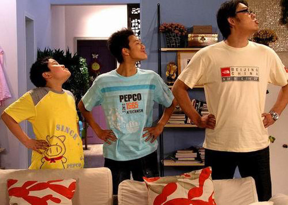

- ENGLISH
- JAPANESE
- CHINESE
HOW TO STUDY CHINESE
1단계
발성>강세>리듬
성조 유의

2단계
딱 하나의 영화 씹어먹기(대사 한개)
1.자막x 몇개의 대사를 보기
2.첫번째 대사로 돌아가 받아적으면서 듣기
3.중국어 자막을 키고 맞는지틀린지 확인
4.알게된 대사를 따라 말하기
*발성 강세 리듬 유의
5.중국어 대사를 들으며 동시에 말하기
*대사가 착 붙어 나올떄까지
3단계
영화 통쨰로 한편 씹어먹기
매일매일 꾸준히 같은 양과 질
방법은 2단계를 반복